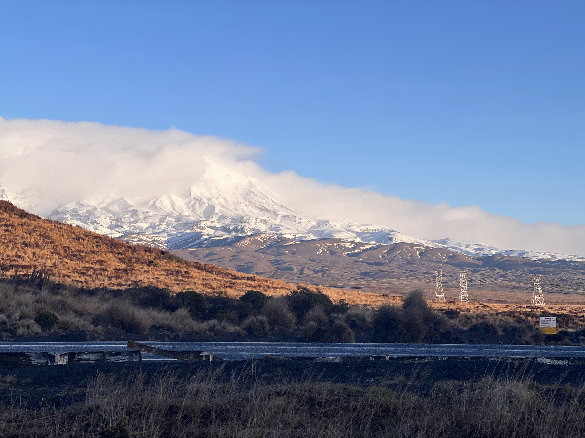
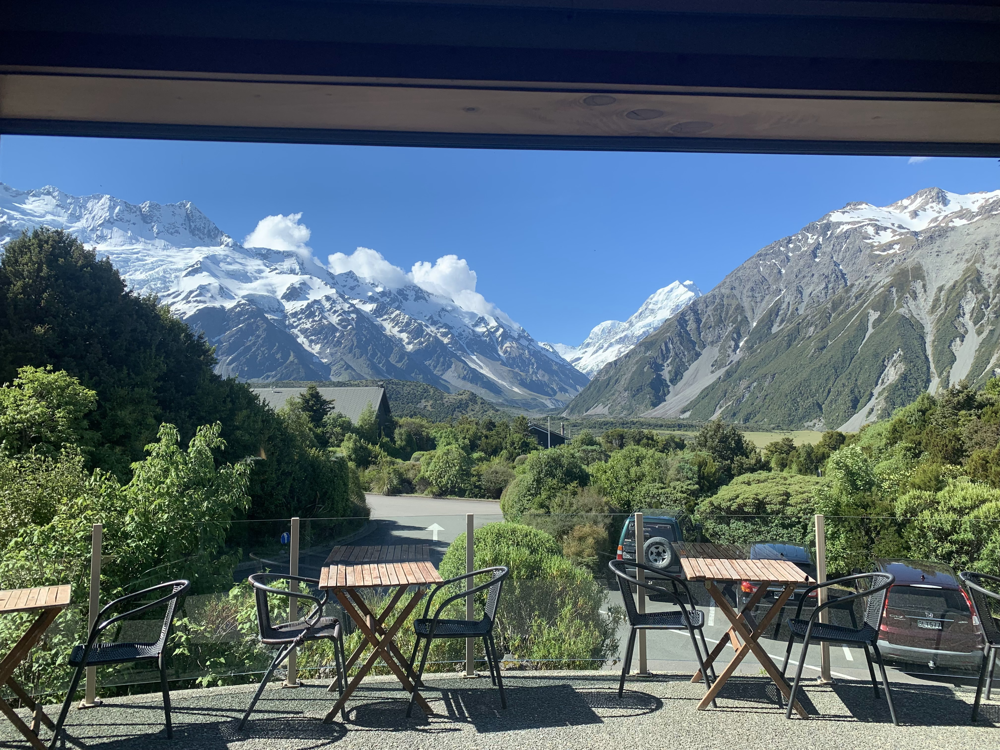
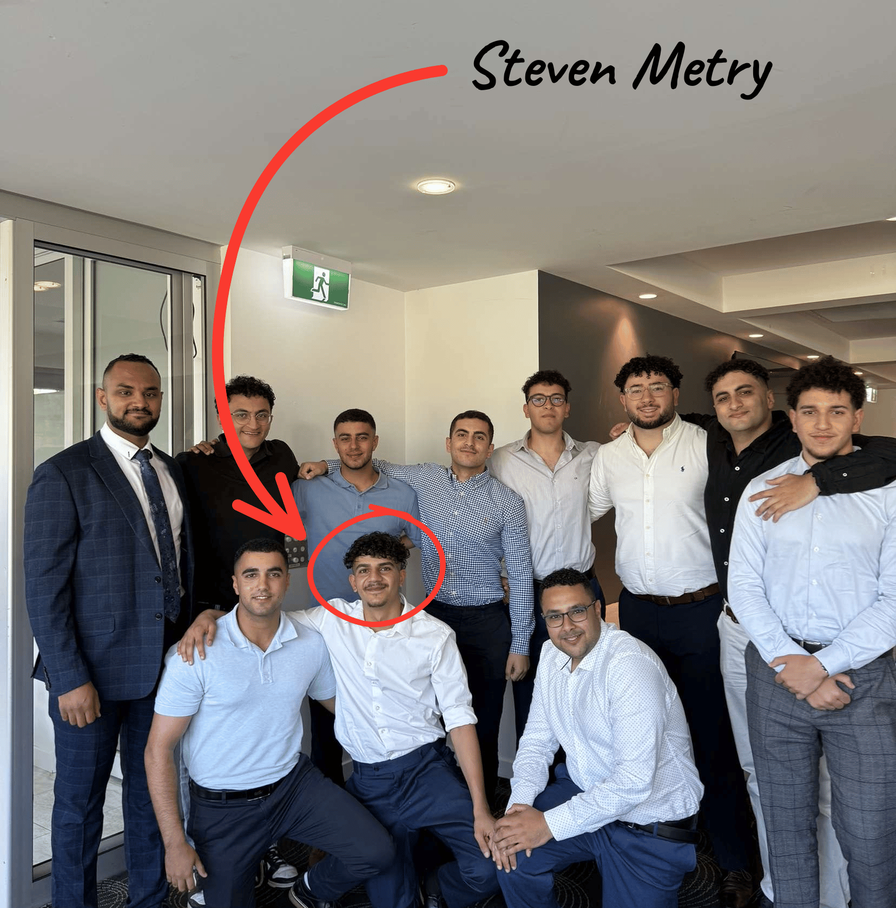

EXPLORE
NZ TOURISM
View Activities

First Class
Kiwiana
Experience
When visiting New Zealand, theres a few places you must see before leaving and telling your mates about it!
- Queenstown | #1 Adventure capital Of the World
- wildly known for it's all-year round Sky Diving, Gondola, Luge, iconic restaurants like Furg Burger (known for famous people coming all over the world to try it out!)
- Milford Sound | #1 Location for Scenic Boat Cruises
-
Cruise along one of the most iconic Scenic Lakes in Aotearoa (New
Zealand.)
With the Iconic Peak which rises 1,692 Metres from the water, you can go Kayaking at night. Look at dolphins, fur seals, and Fiordland crested penguins. - Mount Cook National Park | Highest Peak in NZ
- Known to be the highest peak in NZ, check out the beginner-friendly hike, which is a 3-hour loop to view Mount Cook and the glaciers. You also have



Activities from local Businesses
Visit Some of New Zealand's most popular tourist attractions and
activities at a fair price.
Check out the current offers below!
Father's Day Special
Grab one of these super deal vouchers for the father figure in
your life. A full day of fishing with rod hire included for
$50
instead of $110! Get them while they are still here - limited time
only!
Able to be purchased until 1st September.
Terms and Conditions apply
Coronet Peak OR Remarkables
Lift & Transport Packages
Adult: $229, Child(6-15):
$154 Per Day.
Our ski buses offer guaranteed seats and leave
Queenstown bright and early to get you up to either mountain
around opening time. This means you can make the most of your day
and get in as many runs as possible.
Terms and Conditions apply
Cape Reinga & 90 Mile Beach
Starting from $195 NZD. Visiting the very top of
the North Island hasn't been easier! See Cape Reinga, where the
Tasman Sea meets the Pacific Ocean, and the famous Ninety Mile
Beach.
This is a full day tour, with a scenic drive, sand boarding, and a
delicious lunch.
Terms and Conditions apply

Meet Steven
Your Local NZ Tour Guide
Hi, I'm Steven! I'm here to help guide you through New Zealand's Ultimate Tourist Spots.
Growing up here in NZ, I'm lucky enough to say I've been able to
visit some of Aotearoa (New Zealand)'s top destinations, from
Cape-Ranga all the Way down to The Remarkables in Queenstown. New
Zealand has some of the best Toursist spots to visit all year round,
as we are known to be the "Adventure Capital of the World!" This
means all-year-round skiing, world-class beaches, and Adventure
Parks for days... As someone who's personally experienced all these
amazing activities, I highly recommend you get a group of your mates
together and plan your next adventure.
Book a call with me today, and I can help plan your next trip for Free (Assuming I can join!!)
Request SessionBook a Free 15 Min Call with our NZ Tourism Specialist
If you have any questions or would like to book a planning session, please don't hesitate to contact us. We look forward to hearing from you!